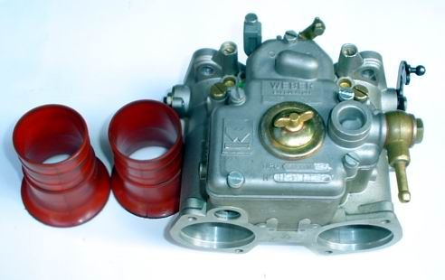

Officina Trentina
di Decarli Claudio
Via di Briamasco 38 · 38122 Trento · Tel. 0461 238554
LAVORI RICHIESTI
Firma cliente ____________OFFICINA
TRENTINA
TRENTINA
Toccate i lavori che vi servono, poi chiamate per fissare.

I carburatori sono il nostro banco
WEBERSOLEXDELL'ORTO
La revisione e la messa a punto dei carburatori fanno risparmiare benzina e migliorano le prestazioni del motore. Revisioniamo qualsiasi marca, e la taratura la facciamo con grande cura.
Via di Briamasco 38
38122 Trento
Tel. 0461 238554